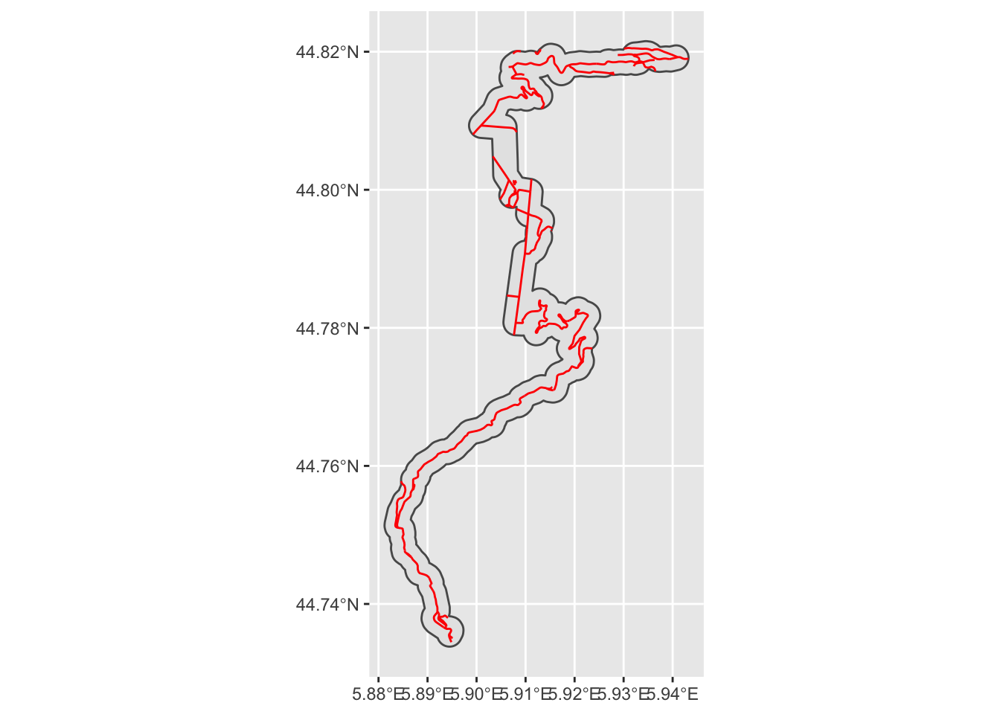

19 Adding OpenStreetMap Data
As well as providing online interactive maps and acting as a source for open map tiles, OpenStreetMap also makes available a wide range of datasets, including labeled shapefiles for roads as well as buildings.
The ropensci/osmdata R package provides a convenient way of download OpenStreetMap data into an R simple features object.
For downloading large datasets that time out when making osmdata calls, use the ropensci/osmextract R package.
19.1 Load in Base Data
As ever, let’s load in our stage data:
library(sf)
geojson_filename = 'montecarlo_2021.geojson'
geojson_sf = sf::st_read(geojson_filename)## Reading layer `montecarlo_2021' from data source `/Users/tonyhirst/Documents/GitHub/visualising-rally-stages/montecarlo_2021.geojson' using driver `GeoJSON'
## Simple feature collection with 9 features and 2 fields
## geometry type: LINESTRING
## dimension: XY
## bbox: xmin: 5.243488 ymin: 43.87633 xmax: 6.951953 ymax: 44.81973
## geographic CRS: WGS 84# Get stage bounding box
stage_bbox = st_bbox(geojson_sf[1,])
#Simplify geometry access
stages_kml = geojson_sf$geometryAnd also load in the elevation data raster:
library(raster)
library(rayshader)
# Previously downloaded TIF digital elevation model (DEM) file
stage_tif = "stage_elevation.tif"
# Load in the previously saved image raster
elev_img = raster(stage_tif)
auto_zscale = geoviz::raster_zscale(elev_img)
# Note we can pass in a file name or a raster object
elmat = raster_to_matrix(stage_tif)Create a base rayshader 2D map:
# Add water
watermap <- detect_water(elmat, progbar = FALSE, zscale = 8)
# Add shadows
shadow_layer = height_shade(elmat) %>%
add_overlay(sphere_shade(elmat, texture = "desert",
zscale=auto_zscale, colorintensity = 5), alphalayer=0.5) %>%
add_shadow(lamb_shade(elmat,zscale = auto_zscale),0) %>%
add_shadow(texture_shade(elmat,detail=8/10,contrast=9,brightness = 11), 0.1)
demo_map = elmat %>%
add_overlay(shadow_layer) %>%
add_water(watermap, color = "desert")19.2 Adding Detail and Features from OpenStreetMap
We can download data from the OpenStreetMap Overpass API using another of the rspatial Github organisation packages: the osmdata package [docs].
Requests can be made using the osmdata::opq() (“Overpass query”) function for tiles covering an area specified by a bottom-left/top-right bounding box with coordinates specified in latitude/longitude degrees.
Requests take the form:
opq(BOUNDING_BOX) + add_osm_feature(REQUESTED_DATA) + osmdata_sf()to return data as a simple features (sf) object;opq(BOUNDING_BOX) + add_osm_feature(REQUESTED_DATA) + osmdata_sp()to return data in as aspatial featuresSpatial(sp`) object.
We could manually obtain the bounding box co-ordinates by applying the raster::extent() function to a bounding box bbox object obtained from a spatial object using sf::st_bbox():
stage_extent = extent(stage_bbox)
#long_min, lat_min, long_max, lat_max
osm_stage_bbox = c(attr(stage_extent, 'xmin'), attr(stage_extent, 'ymin'),
attr(stage_extent, 'xmax'), attr(stage_extent, 'ymax'))To pass the bounding box coordinates into the opq() function explicitly, they should be presented in the order: min_long, min_lat, max_long, max_lat. However, it’s far more convenient to just pass a bbox object to the opq() function directly: opq(stage_bbox).
As for the data we want to retrieve from the Overpass API, let’s grab the “highway” data, which returns routes for a wide range roads and paths in the specified area:
library(osmdata)
# Recall that: stage_bbox = sf::st_bbox(geojson_sf[1,])
stage_osm = opq(stage_bbox) %>%
add_osm_feature("highway") %>%
osmdata_sf()
stage_osm## Object of class 'osmdata' with:
## $bbox : 44.735616,5.883753,44.819732,5.940715
## $overpass_call : The call submitted to the overpass API
## $meta : metadata including timestamp and version numbers
## $osm_points : 'sf' Simple Features Collection with 7995 points
## $osm_lines : 'sf' Simple Features Collection with 346 linestrings
## $osm_polygons : 'sf' Simple Features Collection with 0 polygons
## $osm_multilines : NULL
## $osm_multipolygons : NULLThe routes themselves can be indexed via the $osm_lines dataframe in the returned object.
stage_lines = stage_osm$osm_lines
class(stage_lines)## [1] "sf" "data.frame"Let’s review the data frame column names:
names(stage_lines)## [1] "osm_id" "name" "access"
## [4] "bicycle" "bridge" "covered"
## [7] "fixme" "foot" "highway"
## [10] "incline" "lanes" "layer"
## [13] "maxlength" "maxspeed" "motor_vehicle"
## [16] "oneway" "ref" "sac_scale"
## [19] "service" "smoothness" "source"
## [22] "surface" "tracktype" "trail_visibility"
## [25] "tunnel" "via_ferrata_scale" "width"
## [28] "geometry"The line data is contained in the geometry and the highway describes the road type. Let’s see what sorts of road data we have retrieved by listing the unique items contained in the highway column:
unique(stage_lines$highway)## [1] "unclassified" "tertiary" "secondary" "track" "path"
## [6] "residential" "service" "footway" "steps" "via_ferrata"From the column names, we also notice several other columns that look as if they might be able to provide us with information that might help us classify what the actual stage route is like: smoothness, surface, width, maxspeed, incline. On inspection, the data suggests a lot of empty fields: the most useful fields are probably just the ‘highway’ and perhaps the ‘surface’ columns:
# Cast the simple features object to a dataframe, select the
# columns of interest and then use a list apply to apply the unique
# function to each of the selected columns
lapply(as.data.frame(stage_lines)[c('highway', 'surface')], unique)## $highway
## [1] "unclassified" "tertiary" "secondary" "track" "path"
## [6] "residential" "service" "footway" "steps" "via_ferrata"
##
## $surface
## [1] NA "ground" "asphalt" "wood"19.2.1 Plotting OSM Highways
To get an idea of the extent of the “highways” in the bounding box area, we can plot the spatially represented lines using an appropriate projection. The lines might informatively be colored by surface type, or as in the following case, highway type:
library(ggplot2)
ggplot(stage_lines, aes(color=highway)) +
geom_sf() +
theme(legend.position = "none") +
labs(title = "Open Street Map `highway attribute in stage extent")We can remove paths, footways and other pedestrian routes and narrow down the display to road types that would appear to offer vehicular access:
stage_roads = stage_lines[stage_lines$highway %in% c("unclassified", "secondary", "tertiary", "residential", "service"), ]
# Alternative way of filtering road types using a pipe operator
#stage_roads = stage_lines %>%
# filter(highway %in% c("unclassified", "secondary", "tertiary", "residential", "service"))
ggplot(stage_roads, aes(color=highway)) +
geom_sf() +
theme(legend.position = "none") +
labs(title = "Open Street Map `roads`")19.3 Viewing Roads in the Vicinity of a Route
There is certainly plenty of highways information returned from the Overpass query, but what if we just want to view roads close to our route?
To do this, we can create a buffered region around the route and then find the intersection of the that region and the highways lines.
The sf::st_buffer() will create a buffered area around a simple features object to a specified distance in the units of the projection.
Suppose that we want to create a buffered region 200m wide around our stage route. We can define that distance, along with its units, using the `units::set_units() function:
buffer_margin_200m = units::set_units(200, m)
buffer_margin_200m## 200 [m]To create the buffered region (a polygon) around the stage route (a line), we need to project the latlong values, whose unit of distance is measured in degrees to a rectangular projection with a distance unit of meters.
The coordinates used in the route data are WGS84 latitude and longitude degrees. As we have done previously, we can convert the CRS to one based on units of meters, such as the UTM projection.
lonlat2UTM_hemisphere <- function(lonlat) {
ifelse(lonlat[1] > 0, "north", "south")
}
lonlat2UTMzone = function(lonlat) {
utm = (floor((lonlat[1] + 180) / 6) %% 60) + 1
if(lonlat[2] > 0) {
utm + 32600
} else{
utm + 32700
}
}
# Grab a copy of the original projection
original_crs = st_crs(geojson_sf[1,])
# Find the UTM zone for a sample a point on the route
crs_zone = lonlat2UTMzone(c(st_coordinates(geojson_sf[1,])[1,1],
st_coordinates(geojson_sf[1,])[1,2]))
# Create the projection string
utm_pro4_string = st_crs(crs_zone)$proj4string
#"+proj=utm +zone=32 +datum=WGS84 +units=m +no_defs"
# units in meters e.g. https://epsg.io/32632
# Transform the route projection
utm_route = st_transform(geojson_sf[1,], crs = st_crs(utm_pro4_string))19.3.1 Using sf::st_buffer to Create Buffered Areas
We can now create the buffered area around the route using the sf::st_buffer function:
buffered_route_utm <- st_buffer(utm_route, buffer_margin_200m)
buffered_route <- st_transform(buffered_route_utm, original_crs)
ggplot(buffered_route) +
geom_sf() 
Let’s also save that as a shapefile:
# st_write will try to automatically determine the file driver
# from the filename suffix
st_write(buffered_route, "buffered_route.shp")## Layer buffered_route in dataset buffered_route.shp already exists:
## use either append=TRUE to append to layer or append=FALSE to overwrite layer## Error in CPL_write_ogr(obj, dsn, layer, driver, as.character(dataset_options), : Dataset already exists.We can view the roads that appear within the buffered area around a stage route by finding the intersection of the road lines and the buffered area:
roads_by_stage <- st_intersection(stage_roads, buffered_route)## although coordinates are longitude/latitude, st_intersection assumes that they are planarggplot() +
geom_sf(data=buffered_route) +
geom_sf(data=roads_by_stage, color='red')  Note that we actually get a warning: although coordinates are longitude/latitude, st_intersection assumes that they are planar. So we really should have projected the roads into UTM and done the intersection using that CRS:
stage_roads_utm = st_transform(stage_roads,
crs = st_crs(utm_pro4_string))
roads_by_stage_utm <- st_intersection(stage_roads_utm, buffered_route_utm)
#although coordinates are longitude/latitude, st_intersection assumes that they are planar, so we really should project into something else
ggplot() +
geom_sf(data=buffered_route_utm) +
geom_sf(data=roads_by_stage_utm, color='red') 19.3.2 Using rgeos::gBuffer to Create Buffered Areas
Alternatively, we can create a buffered area using the rgeos::gBuffer() function, this time applied to a projected Spatial object with units of meters.
For example, we can buffer our stage roads in their UTM (units of meters) projection:
buffered_roads = rgeos::gBuffer(as(stage_roads_utm, 'Spatial'),
width=200)
# ggplot expects a simple features, rather than Spatial, object
ggplot(st_as_sf(buffered_roads)) +
geom_sf() +
# Tweak the presentation angle of the x-tick labels
theme(axis.text.x = element_text(angle = 45))19.4 Adding Additional Data From OSM
As well as highways data, OpenStreetMap also provides data on a wide range of other features.
For example, we can identify waterways:
stage_water_lines = opq(osm_stage_bbox) %>%
add_osm_feature("waterway") %>%
osmdata_sf()
stage_waterways = stage_water_lines$osm_linesLet’s preview those to see how they extends in our bounded box area:
ggplot(stage_waterways) +
geom_sf(color='blue') +
geom_sf(data=stages_kml[1], color='red') +
theme(legend.position = "none") +
labs(title = "Open Street Map `waterways`")One thing to note about this plot is that data has been returned for an area that exceeds the extent of our request.
We can create a rayshader layer for the waterways that we can then add as another overlay to a rendered map:
waterways_layer = generate_line_overlay(stage_waterways,
extent = stage_extent,
heightmap = elmat,
color="skyblue2",
linewidth = 2)Let’s also create a new route layer, this time in red:
# Generate a route layer in red
red_route = generate_line_overlay(geojson_sf[1,],
extent = stage_extent,
heightmap = elmat,
linewidth = 5, color="red")Create a roads layer:
roads_layer = generate_line_overlay(stage_roads, extent = stage_extent,
color="yellow",
heightmap = elmat)Adding the waterway layer to the map potentially allows us to read additional detail into it. For example, a waterway under a highway presumable means a bridge (or a ford), and may also mean “narrows” or “care”…
demo_map %>%
add_overlay(waterways_layer) %>%
add_overlay(roads_layer) %>%
add_overlay(red_route) %>%
plot_map()The waterway plotted over the water map area looks a bit odd, but we could address that by changing the layer order: layers are placed on top of each other in the order we present them, so all we need to do is overplot the waterways by the watermap, rather than the plotting the waterways over the watermap:
rich_map = elmat %>%
add_overlay(shadow_layer) %>%
add_overlay(waterways_layer) %>%
add_overlay(roads_layer) %>%
add_overlay(red_route) %>%
add_water(watermap, color = "desert")
rich_map %>%
plot_map()19.4.1 Adding Building Layers from OpenStreetMap
Another class of feature that we seen on certain map tiles, and that may be useful to add directly to map layers, are building outlines. In a rally stage, buildings may add to the hazard or otherwise help us get an feel for what a particular part of a stage is like.
We can download building outlines from the OSM Overpass API by requesting feature objects of type building.
The objects of interest to us are the building outline polygons:
stage_buildings_polygons = opq(osm_stage_bbox) %>%
add_osm_feature("building") %>%
osmdata_sf()
stage_buildings = stage_buildings_polygons$osm_polygonsLet’s quickly plot those to see how they look:
ggplot() +
geom_sf(data=stage_buildings,) +
geom_sf(data=stages_kml[1], color='darkgrey') +
theme(legend.position = "none") +
labs(title = "Open Street Map `buildings`")As before, we can create a layer from the OSM polygons data that we can add to a rayshader rendered view:
buildings_layer = generate_polygon_overlay(stage_buildings,
extent = stage_extent,
heightmap = elmat,
palette='darkred')Now add the buildings layer to the map:
rich_map %>%
add_overlay(buildings_layer) %>%
plot_map()19.4.2 The Wide Variety of OSM Features
Another feature that might be useful to stage planners is locating any car parks in the area using the add_osm_feature("parking") feature. The add_osm_feature("tourism") feature also identifies a range of “touristy” features, such as picnic_site, camp_site, information and viewpoints elements, returning a combination of polygons and points.
tourism = opq(osm_stage_bbox) %>%
add_osm_feature("tourism") %>%
osmdata_sf()
unique(tourism$osm_points$tourism)## [1] "information" "picnic_site" "viewpoint" NA "attraction"
## [6] "camp_site"We can filter on selected tourist feature types:
tourist_points = tourism$osm_points %>%
dplyr::filter(tourism %in% c("picnic_site", "camp_site", "viewpoint"))
head(tourist_points)## Simple feature collection with 6 features and 7 fields
## geometry type: POINT
## dimension: XY
## bbox: xmin: 5.887543 ymin: 44.75704 xmax: 5.927669 ymax: 44.81948
## geographic CRS: WGS 84
## osm_id name ele fixme information place
## 1251050393 1251050393 <NA> <NA> <NA> <NA> <NA>
## 2263000758 2263000758 Belvédère du Sautet <NA> <NA> <NA> <NA>
## 2381632012 2381632012 <NA> <NA> <NA> <NA> <NA>
## 2933152319 2933152319 <NA> <NA> <NA> <NA> <NA>
## 3053467199 3053467199 La Croisette <NA> <NA> <NA> <NA>
## 3625424363 3625424363 Camping du Lac <NA> <NA> <NA> <NA>
## tourism geometry
## 1251050393 picnic_site POINT (5.887543 44.75704)
## 2263000758 viewpoint POINT (5.907652 44.81785)
## 2381632012 picnic_site POINT (5.908112 44.81805)
## 2933152319 picnic_site POINT (5.915663 44.81948)
## 3053467199 viewpoint POINT (5.925582 44.78287)
## 3625424363 camp_site POINT (5.927669 44.8167)And then plot them relative to our stage route:
ggplot() +
geom_sf(data=tourist_points, aes(color=tourism)) +
geom_sf(data=stages_kml[1]) +
#theme(legend.position = "none") +
labs(title = "Open Street Map tourism")See the rayshader tutorial on Tutorial: Adding Open Street Map Data to Rayshader Maps in R* for more examples.